围棋是一种策略性两人棋类游戏（也有联棋或团队对战模式，有两人对两人、一人对多人、多人对多人等形式），使用格状棋盘及黑白二色棋子进行对弈。中国古时有“弈”、“碁”、“手谈”等多种称谓，是我国古代知识阶层修身养性的一项必修课，属于琴棋书画四艺之一。围棋是一项高雅、智慧、轻松的运动，能养智益德，助学进步，陶冶性情，已经得到世界广泛的认可。
围棋起源于中国，具体年代不可考。多见于东晋张华撰的《博物志》中，记载有“尧造围棋，以教子丹朱”与古文版【博物志】“堯造圍棊，丹朱善之”。
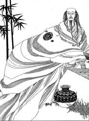“尧造围棋，以教丹朱”。
围棋已在社会广泛流传了。古代的军事家借助围棋排兵布阵，演练队伍，达到围而杀之的目的。汉代刘向《围棋赋》：“略观围棋，法于用兵，怯者无功，贪者先亡。”
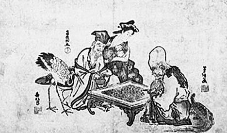
孔子老子对局图
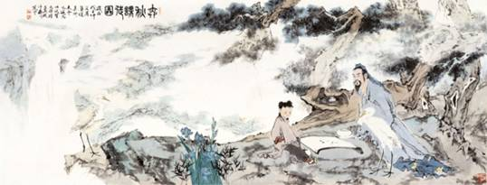
弈秋——围棋“鼻祖”。据说“金角银边草肚皮”这句著名的围棋名言就是他第一个提出来的。
围棋渐趋盛行。唐代的盛况，宋代的奇观，明代的瑰景，孕育着明末清初的巅峰，掀起这个围棋高潮的是明末过百龄。
陈遂陪同西汉宣帝下棋，成为历史上第一个因围棋而封官的人。
“建安七子”之一——王粲，我国古代记载的最早复盘的围棋棋手。
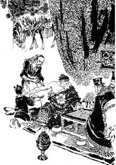
关羽疗毒，不要麻药，只跟别人喝酒下棋。 关公弈棋刮骨图
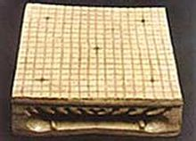
隋代围棋盘
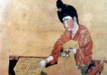
唐代侍女弈棋图
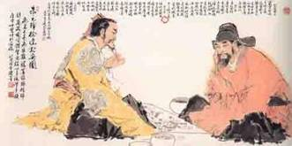
朱元璋徐达对弈图
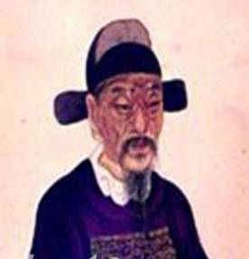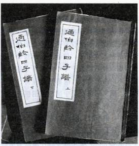
【明】过百龄
清代
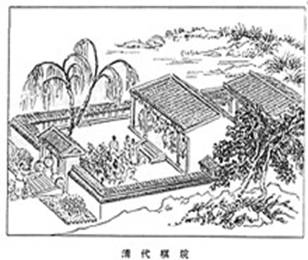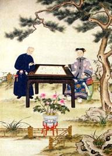
到了近代，围棋在日本蓬勃发展，中国的围棋逐渐被日本赶超，清朝后期，中国棋手和日本棋手之间已经有一定的差距。
东渡日本的吴清源大师，19岁时用自创的“新布局”对阵日本围棋名人，翻开了围棋史上崭新的一页。之后横扫千军，超越前贤，雄居“天下第一”。
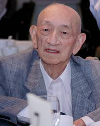
新中国成立后，新一代的围棋国手在新中国成长起来。代表人物:聂卫平，古力。
聂卫平：80年代中后期，聂卫平在中日擂台赛中创造了八场不败的记录，取得了前三届中日擂台赛的胜利，也在神州大地掀起了新的围棋学习的热潮。
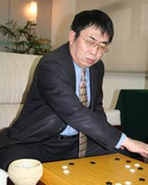
古力：中国男子围棋队运动员，重庆市人。1997年底拜聂卫平为师。2008年成功终结了韩国富士通杯十连冠，之后又战胜各大围棋名人，成为世界冠军。
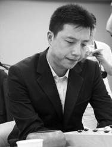
围棋主要呈现中、韩、日三国鼎立的局面。在围棋界流行着这样一种说法，“中国是围棋的生母，日本是养母，韩国的崛起推动了围棋的发展”。日本围棋整体水平止步不前，中韩围棋水平不断提高，形成了中韩争霸的局面。作为围棋诞生地的中国，想要成为一个围棋大国，还是需要多方面的努力。
本网站正在建设中, 部分功能未能开放, 感谢您的关注、支持与谅解.
弈之道 围棋道场